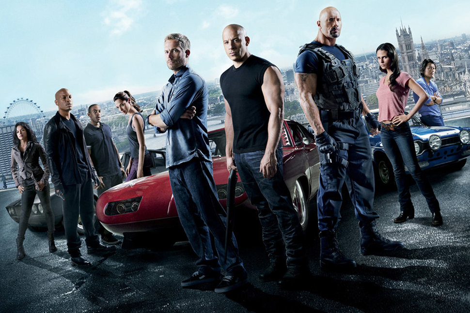

Velozes e Furiosos 5: Operação Rio
Desde que o ex-policial Brian O'Conner e Mia Toretto libertaram Dom da prisão, eles viajam pelo mundo para fugir das autoridades. No Rio de Janeiro, eles são obrigados a fazer um último trabalho antes de ganhar sua liberdade definitiva. Brian e Dom montam uma equipe de elite de pilotos de carro para executar a tarefa, mas precisam enfrentar um empresário corrupto e também um obstinado agente federal norte-americano.Desde que o ex-policial Brian O'Conner e Mia Toretto libertaram Dom da prisão, eles viajam pelo mundo para fugir das autoridades. No Rio de Janeiro, eles são obrigados a fazer um último trabalho antes de ganhar sua liberdade definitiva. Brian e Dom montam uma equipe de elite de pilotos de carro para executar a tarefa, mas precisam enfrentar um empresário corrupto e também um obstinado agente federal norte-americano.